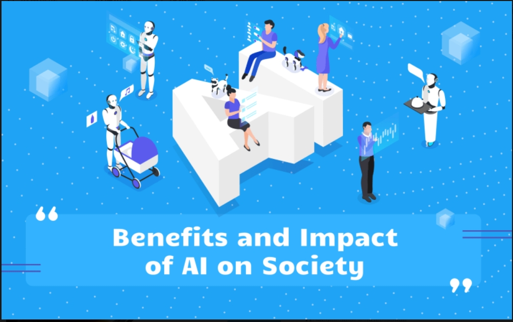

人工智能的社会影响与挑战
人工智能（AI）作为一种颠覆性技术，对社会产生了深远的影响，同时也带来了诸多挑战。以下是对人工智能的社会影响与挑战的详细分析：
一、人工智能的社会影响
就业市场的影响
人工智能技术的快速发展正在改变就业结构，一方面，某些传统职业面临被自动化取代的风险，导致失业问题；另一方面，新兴职业和行业不断涌现，需要新的技能和人才。例如，人工智能在医疗、教育、交通等领域的应用不仅提高了效率，还创造了新的就业机会。然而，这种结构性变化也引发了对低技能劳动力的担忧，因为这些群体可能难以适应新的工作需求。
隐私与数据安全
人工智能技术依赖于大量数据的收集和分析，这引发了数据隐私和安全问题。例如，人工智能系统可能被用于监控和分析个人行为，从而引发隐私泄露的风险。此外，数据滥用和算法偏见也可能导致不公平的决策。
伦理与道德问题
人工智能的应用引发了伦理和道德上的讨论，包括算法偏见、透明度和可解释性等问题。例如，算法可能复制现有的社会歧视，加剧社会不平等。此外，人工智能在决策过程中的透明度不足也引发了公众的担忧。
社会公平与包容性
人工智能的发展可能导致社会不公平和排斥现象。例如，技术知识的不平等获取可能加剧社会两极分化。为了应对这一挑战，政府和企业需要采取措施，确保人工智能技术为所有人带来公平和包容的效益。
社会治理与公共政策
人工智能技术的广泛应用对社会治理提出了新的挑战。例如，如何在保障隐私的同时利用人工智能进行社会控制，以及如何制定合适的公共政策来引导技术的良性发展。此外，全球范围内对人工智能治理的共识尚未形成，这需要国际社会共同努力。
二、人工智能的挑战
技术风险与安全问题
人工智能技术的发展带来了潜在的安全风险，例如网络安全威胁、身份盗窃以及恶意软件的生成。此外，人工智能在军事领域的应用（如致命自主武器系统）也引发了伦理和安全上的争议。
社会不平等与财富分化
人工智能可能加剧社会不平等现象，例如财富、权力和知识差距。这种不平等不仅体现在职业领域，还可能影响到社会的各个层面，如教育、医疗和日常生活。
心理与社交影响
人工智能技术的发展可能对人类的心理和社交行为产生不良影响。例如，过度依赖人工智能可能导致人际交往能力的退化。此外，虚假信息的传播也可能通过人工智能技术被放大，进一步加剧社会分裂。
环境影响
训练复杂的人工智能模型需要大量的计算资源和电力消耗，这可能加剧全球能源危机和气候变化。此外，人工智能硬件设备的生产也会产生大量电子废物，对环境构成威胁。
三、应对策略与建议
加强监管与立法
各国政府应加强对人工智能的监管，建立具有人性化、公正、透明的法律框架。例如，通过制定相关伦理规范和指导原则，确保人工智能技术的道德和法律合规性。
公众参与与教育
提高公众对人工智能技术的认识和理解，倡导公众参与AI的设计和决策过程。通过教育和培训提升劳动者的技能水平，帮助他们适应新的就业需求。
技术创新与政策引导
通过技术创新和政策引导，平衡技术进步与社会公平的关系。例如，在无人驾驶技术的应用中，政府和企业需要共同制定相应的法规和标准，以确保技术的安全性和可靠性。
国际合作与治理
加强国际间的合作与对话，推动全球范围内对人工智能风险的共识和治理机制的建立。例如，通过国际组织协调各国的政策和标准，确保人工智能技术的全球治理。
总结
人工智能技术的发展既带来了巨大的机遇，也提出了诸多挑战。只有通过合理的政策引导、技术创新和国际合作，才能最大限度地发挥其潜力，同时规避潜在的风险，实现人工智能技术的可持续发展。